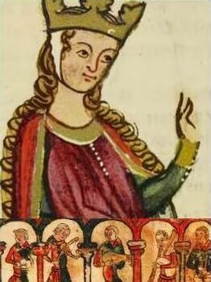
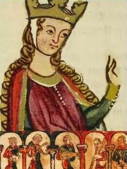

.jpg)

 



Coincidences & Curiosities
This site is dedicated to investigate and expose curious coincidences found during years of investigation, between academically recognised historical facts, and myths from the Matter of Britain, and more specifically the Arthurian cycle.
All facts exposed are throughtly referenced, and documented from unvaluable digitalized manuscripts from the National Library of the United Kingdom (British Library), and other valuable and reliable resources, such as Cambridge University research papers, or the Encyclopaedia Britannica, amongst others.
Although it is frequently stated by historians that there is often a part of hidden history behing every myth or legend, this site does not seek to present any curious coincidences found as the ultimate historical truth behind the myth.
Receive our monthly newsletter containing updates on any new curious coincidences found around this matter.
Become part of our vibrant community, and attend cultural and social events related to the Early Middle Ages around Europe, such as expositions, lectures, and conferences.
Share any possible new findings of your own with us, and eventually contribute to unveil long-lasting mysteries from the Dark Ages.
Every once in a while, we organize some visits to emblematic sights related to the curious coincidences found between history and myth. Join in!